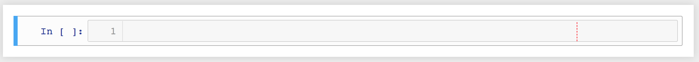

Hello World!
Contents
3. Hello World!#
To begin your Python journey, open a new Jupyter notebook, either from the Anaconda Navigator or from the command line (for beginners, I strongly recommend the Navigator). Recall that once you have launched the Jupyter Notebook from the Anaconda Navigator (or command line), it will bring you to the Notebook Dashboard, where you can open a new notebook by selecting New -> Python 3 from the dropdown menu on the top right. Your new notebook should look something like this:
{kind=link}
If you have any additional questions, look here or ask Google!
3.1. Your first program#
To execute your first Python command, click on the grey box with a blue bar to the left as shown below. This is known as a cell, and it is where you will enter your Python commands.
{kind=link}
In the cell, type print("Hello World!") and then hold shift and hit enter (or hit ⌘ + enter ). You should now see:
{kind=link}
Congratulations! If all has gone well, you have now executed your first Python command and your computer has greeted the world!
In some ways, this is all there is to programming: you type some commands, hit shift + enter, and something happens! In Jupyter we use the cells to break up the code into chunks and we can execute those chunks independently. We’ll explore this more shortly, but you should test this yourself by typing something else into the new cell that popped up (Try print("Hello Computer!")).
The difficulty then comes in learning Python’s commands and syntax in order to put down code that means something. The print command that you just entered is an example of a Python function. Functions are ubiquitous in Python as they are how we wrap up useful actions like sum to add up numbers or sorted to put items in order. We’ll learn all about Python’s builtin functions and in section 7, you will learn to write your own!
In general, the syntax for a Python function is func(args), where the function func takes in args as inputs. The inputs to a function are called arguments, hence the name args. The func function then does some prescribed actions involving args to do something. The parentheses indicate that you are invoking func on the stuff inside the parentheses (args), and if you see this syntax - something_new(some_stuff), for example - you can safely assume that something_new is a function. This is your first introduction to Python’s syntax, i.e. its “grammar”, for how we tell it to do things. Getting a handle on syntax is something that will come with time, but I’ll try to point it out whenever something new is happening.
As a final note, another very useful function is the help function. If you discover a new function, you can feed it to help as an input (help(mystery_func)) and the function’s documentation will be shown. Part of the Python ethos is to strongly encourage documentation of everything, and there are guidelines for how they should be written so that you can always follow along.
3.1.1. The print function#
In the case of print("Hello World!"), the input is "Hello World!" and the print function “prints” the input to the screen, which is why we see Hello World below the first cell. In general, Python does not display everything to the user, so the print function is a SUPER USEFUL way to keep track of what is going on in your code. Throughout this tutorial, we will liberally use print to make sure that we know what is going on in our codes.
As we’ll see shortly, Jupyter notebooks automatically “print” the last line of any cell, making print somewhat redundant, but since we’ll often want to look at more than one thing per cell, we’ll keep print at the top of the toolbox.
3.2. Python as a Calculator#
Some of the most basic things that computers can do are to do basic arithmetic, and Python allows easy access to this computer-as-calculator power via the operations +, -, *, /, and **. To see this in action, type and execute the following in a new cell:
print(2 + 2)
print(4 - 7)
print(7 * 32.46)
print(3 / 2.2)
print(3 ** 2)
4
-3
227.22
1.3636363636363635
9
You should see the correct results of the addition, subtraction, multiplication, division, and exponentiation of these numbers. Notice that Python has no problem with decimals or negative numbers.
You can also use parentheses as we’re used to in algebra to indicate correct order of operations. For example execute the following:
print((2 + 22)/3)
print(2 + 22/3)
8.0
9.333333333333332
Now that we’ve explored the basic functionality of Jupyter notebooks and Python scripts, take a crack at the following exercises:
3.3. Exercise 2.1#
Select a notebook cell and hit
escto enter Command Mode (the left edge of the cell should turn blue). Hithon your keyboard to bring up the keyboard shortcuts! These are great shortcuts to improve your Jupyter experience. The opposite of command mode is Edit Mode (the cell will have a green edge) and is where you can enter commands and run code.Use Python to compute the result of dividing 42 by the sum of 3.1415 and 1.618. Also, square this result. Make sure to print everything!